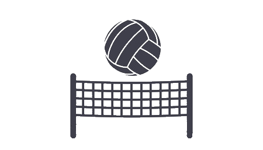

<!--
  Generated template for the DashboardPage page.

  See http://ionicframework.com/docs/components/#navigation for more info on
  Ionic pages and navigation.
-->
<ion-header>

  <ion-navbar #navbar color="primary">
    <button ion-button menuToggle *ngIf="!onEdit">
      <ion-icon name="menu"></ion-icon>
    </button>
    <ion-buttons left *ngIf="onEdit">
      <button ion-button icon-only (click)="removeOnEdit()">
        <ion-icon name="arrow-back"></ion-icon>
      </button>
    </ion-buttons>
    <ion-title>{{onEdit ? 'Elimina partite' : 'Dashboard'}}</ion-title>
    <ion-buttons end *ngIf="(onlineVersion | async)?.current != version">
      <button ion-button icon-only (click)="reload()" class="update-button">
        <ion-icon name="cloud-download"></ion-icon>
        Update
      </button>
    </ion-buttons>
    <ion-buttons end *ngIf="onEdit">
      <button ion-button icon-only (click)="deleteGames()">
        <ion-icon name="trash"></ion-icon>
      </button>
    </ion-buttons>
    <!-- <ion-buttons end *ngIf="userLogged">
        <button ion-button icon-only (click)="logOut()">
          <ion-icon md="md-log-out"></ion-icon>
        </button>
      </ion-buttons> -->
  </ion-navbar>

</ion-header>


<ion-content padding class="dashboard-container" hide-fab>
  <div class="empty-dashboard" *ngIf="emptyGames">
    <ion-grid style="height: 100%">
      <ion-row justify-content-center align-items-center style="height: 100%">
        <div>
          
          <p class="text_empty_dashboard">Non hai partite salvate.. Incomincia creandone una!</p>
        </div>
      </ion-row>
    </ion-grid>
  </div>

  <div *ngIf="!emptyGames">
    <ion-grid>
      <ion-row>
        <ion-col col-12 col-sm-6 col-md-6 col-lg-4 col-xl-3 *ngFor="let game of (games | async)?.slice().reverse(); let i = index">
          <game-widget [game]="game" [i]="i"></game-widget>
        </ion-col>
      </ion-row>
    </ion-grid>

  </div>
</ion-content>